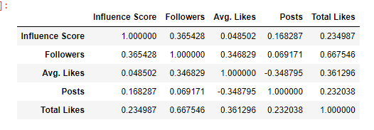
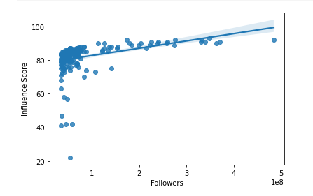
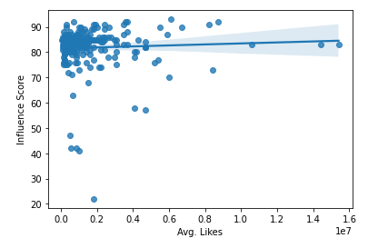
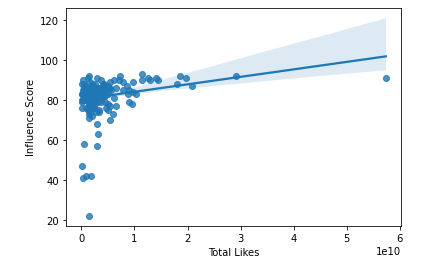
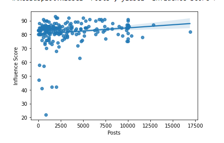

Instagram has become very influential in the way we process information. There are also many people wanting to become popular and make a career out of instagram.
We possess these four questions about the top 200 most popular accounts on instagram to see what is the driving factor of a successful instagram career.
1) Is there a positive, statistically significant correlation between the number of followers an influencer has and their influence score? 2) Is there a positive, statistically significant correlation between the average likes an influencer has on a post and their influence score? 3) Is there a positive, statistically significant correlation between the total number of likes an influencer has and their influence score? 4) Is there a positive, statistically significant correlation between the number of posts an influencer has made and their influence score?
In a data set on the 200 most popular accounts on instagram. The data set consisted of rank of the Influencer, Username of the Instagrammer , influence score of the users, number of posts they have made so far, number of followers of the user, average likes on instagram posts, last 60 days engagement rate of instagrammer as faction of engagements they have done so far, average likes they have on new posts, total likes the user has got on their posts, and country or region of origin of the user. After wrangling the data and converting the string numerical values to actual numbers, we were left with rank, number of posts, number of likes, like averages, and number of followers.
1) There is a positive statistically significant correlation between the number of followers an influence has and their influence score, but the correlation between the two is not very strong. Only having a correlation of 0.365. This means that the number of followers you have means you will have a higher influence score. The only thing is there should probably be a higher correlation based on the way instagram calculates influencer score. The data found on kaggel is over 12 years old and a lot has changed since 2010 in regard to instagram.
2) There is a very small and ingisnginfigan postive correlation between average likes an influcer gets and their influence score. The correlation between the two is 0.0485. THis means that the average like on a post has little to do with one influencer score. In doing research I found that it was more important to post more consistently than get higher average likes
3) There is a positive, statistically significant correlation between the total number of likes an influence has and their influence score, the correlation between the two is 0.235. This means that the more likes a person has the more likely there are going to have a higher influencer score.
4) Finally there is a positive correlation between the number of posts and the influencer score, the correlation is 0.168. The more posts the better but posting consistently and getting a higher number of likes is what will allow a person to become more influential on instagram.
